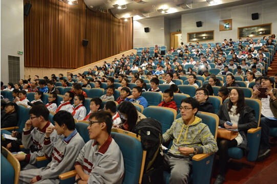

Science Gardener Plan
——Promoting Science Education

About:
Science Gardener festival is an effective and outstanding platform which will gather teachers from schools for professional communications, research outcome with scientific teaching methods, excellent teaching cases in the form of seminar and training so as to encourage and benefit teachers in educating students in a scientific way.
 Science gardener festival (Every September)
Science gardener festival (Every September)
Annually, Science Gardener Festival invites science educators to participate in seminars, discussions and to show their outcomes.
Seminar on Adolescents’ science literacy development
It is held the same time as Science Gardener Festival. Specially, there will be famous scholars home and abroad to share leading ideas with Shanghai science educators.
Science seed garden
It is the base for our teachers to teach and communicate, and to foster excellent study cases so as to develop their teaching ability.
Series training for science instructors
SSAYT together with STCSM helps science instructors from all districts in Shanghai to study STEM literacy and to improve ability in science education.


STEM golden prize case study
SSAYT invites experts to analyze golden prizes cases in international adolescents’ science fairs and contests and make public speeches for students to get to know the current trend flow.

50th anniversary of diplomatic relations between France and China Series Activity: Face to Face
The establishment of France-Chinese relations in 1964, under the Presidency of Charles de Gaulle, was a founding moment: this recognition ensured France a unique position in China. It has also contributed to lasting changes in international relations.
2014 also marks the 30th anniversary of Franco-Chinese relations in civil nuclear cooperation, a key area which benefits greatly from bilateral cooperation, in the same way as the aeronautic sector. To support the development of its relations with France, Shanghai Science Association cooperates with Université de Bourgogne (Bourgogne University) and hosted Face to Face with efforts of Vice President of Bourgogne University, Professor Dr. Daniel Raichvarg and other two doctors.
Face to Face is for students who are interested in Science to have face to face talks with Professors majored in different kinds of fields, to know how those professors works on their own projects and research in a vivid way.
We also have cooperation with French Academy of Science, where we had our staffs and teachers there for training, where we know the program called Face to Face, and also Hands-on and etc.